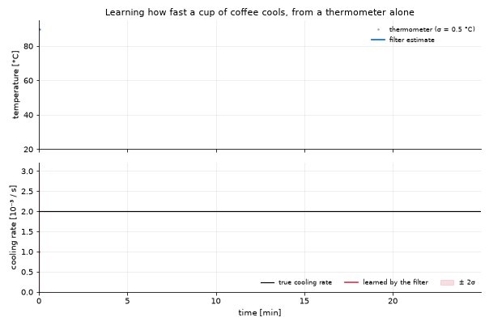

|
Kalman World
1.0.0-2-g101bd0d
State estimation, dynamical systems and predictive learning 🛰️📈
|
This page is for someone who wants their filter to run fast and wants to know what to write, and where. It answers three questions:
The worked example is a toy: a cup of coffee cooling in a room, read by a thermometer. The same compiled model is run by a C++ program and by a Python script, on the same sensor readings.
Python is the interface. You build models, run filters, read records and draw plots in Python. The arithmetic underneath runs in C++ whenever the library is installed, and in numpy when it is not. Nothing in your code changes between the two.
| Piece | Where it runs | When |
|---|---|---|
| Filter workflow, records, plots, notebooks, the JSON API | Python | always |
| The Kalman update, the smoother, sigma-point and particle sums | C++ (libKalman) | when the library is found; numpy otherwise |
| A linear model with fixed matrices | C++, the whole pass in one call | when the library is found |
| A nonlinear model written in Python | the loop and the filter arithmetic in C++; C++ calls the Python f and h | extended, unscented, particle and ensemble engines, when the library is found |
The integrators (Euler, RK4, Dormand-Prince): step, integrate | C++ (Kalman::Integrators), calling the Python derivative | real double-precision states; complex states and schemes written in Python stay in Python |
The field solvers: SpectralSolver.advance (numpy backend) and FiniteDifferenceSolver.advance | C++ (Kalman::Solvers::Vorticity, ::FiniteDifference) | a solver that states its physics (NS2D, BetaPlaneNS2D, diffusion); a subclass with other physics stays in Python |
The ensemble filter of a field model (its own forecast, observe, localization, initial_ensemble) | KolmogorovFlowModel, BarotropicFlowModel: the whole pass in C++ (libKalmanApps), the members forecast in parallel; the draws and the initial ensemble are numpy's. Another field model: its hooks in Python, the analysis arithmetic in the C++ kernel enkf_analysis | when the library is found; a surrogate forecast or a libTorch solver keeps the Python hooks |
Sampling: model.sample(...) | the C++ loop; the noise is still drawn by numpy, so a seeded run is unchanged | extended engine |
A closed loop: forward(z, controller) with a controller function | the same C++ loop, which calls the controller at every step | when the model takes a control |
| The controllers: P, PID, LQR, MPPI, Boost, AdaptiveQR | C++ (Kalman::Controllers); a Python model's f, h, noise and clip_u are called back | real double-precision models; the neural controllers stay in Python |
| The routers: Bayesian, Threshold, Hybrid | C++ (Kalman::Routers); a Hybrid's Python child is called back | when the library is found |
| A nonlinear model written in C++ | C++, the whole pass in one call | when its library is loaded |
| The four application models with a C++ twin | C++, the whole pass in one call | when libKalmanApps is found |
One loop runs every case, in C++. What differs is where the physics is evaluated. A model written in Python is called back at every step, so its pass costs about what the Python loop did (measured: 1.0 to 1.5 times faster with the extended engine, 2.4 times with the unscented one in closed loop). A model written in C++ never comes back to Python, and that is where the large factors below come from.
Noise and the w, v arguments. f(x, u, w, t) and h(x, v, t) are the contract's signatures, so every model has w and v whether it uses them or not. The sigma-point and particle engines hand the noise to the map only when the model declares no coupling (L, M) and the map really responds to the argument (it is tried once, at the initial state). Otherwise the noise is added, L Q Lᵀ and M R Mᵀ, as the extended engine does. A model that takes v and ignores it therefore keeps its R in every engine.
The classes keep their names, constructors and logs; what moved is the arithmetic. Each one builds its C++ counterpart on first use and forwards _policy and _update (a controller) or route (a router) to it. The Python arithmetic stays as _reference_policy, _reference_update, _reference_route: it is what runs inside native.python_reference(), for a complex model, and without the library, and the tests compare the two (tests/test_native_controllers.py, tests/test_native_routers.py).
| Class | C++ | What crosses | Agreement with the reference |
|---|---|---|---|
ProportionalKalmanController | Controllers::Proportional | the belief, once per call | exact |
PIDKalmanController | Controllers::PID (holds the integral) | the belief | 1e-17 |
LQRKalmanController | Controllers::LQR, Algebra::SolveDARE | model.F(), model.B() once, at fit() | gain 1e-13 (scipy is the reference) |
MPPIKalmanController | Controllers::MPPI (holds the warm start) | the perturbations, drawn in Python from the seeded generator; model.f and clip_u are called back per rollout step | 1e-11 |
BoostKalmanController | Controllers::Boost | H and the current R, called back; the factor comes back and is applied to model._R here | the same boosts at the same steps |
AdaptiveQRKalmanController | Controllers::AdaptiveQR | H and R, called back; the factor is applied to model._Q here | 1e-13 per call, 2.5e-11 after 280 closed-loop steps |
BayesianRouter | Routers::Bayesian | c and the likelihoods (no NIS) | exact |
ThresholdRouter | Routers::Threshold | the last window NIS rows | exact |
HybridRouter | Routers::Hybrid | both children in C++, or a Python child (a NeuralRouter, a callable) called back | 1e-15 |
Three things follow from where the line is drawn:
model._R / model._Q in Python, and their C++ side reads R and Q from the Python model at every call. So the filter running the model sees the retuning, on the C++ loop as on the Python one, as before.reset() resets both sides.Two differences, both on innovations with a missing (NaN) channel: Boost scores the channels present (the reference's NIS is NaN and never boosts) and AdaptiveQR leaves the innovation out of its window (the reference's factor becomes NaN). An empty NIS history gives a ThresholdRouter uniform probabilities on both paths.
How long one call takes (tools/benchmark_controllers.py, best of five; the Python column is the same class on its reference path, everything else as shipped):
| Call | C++ | Python |
|---|---|---|
| Proportional, PID, LQR policy (one call with its logging) | 12 to 15 us | 6 to 9 us |
LQR fit() (the Riccati equation) | 420 us | 210 us (scipy) |
| Boost, AdaptiveQR | 40 us | 37 to 40 us |
MPPI 100 x 40 x 3 on the car (a Python f) | 219 ms | 201 ms |
| MPPI 100 x 40 x 3 on a C++ model (the example pendulum) | 18 ms | 70 ms |
| Bayesian, Threshold route | 4.5 to 6 us | 1.7 to 4.5 us |
| Hybrid(Bayes, Threshold) route | 13 us | 14 us |
So the C++ path is slower where the work is a few numpy operations: the crossing (about 4 us) costs more than the arithmetic it replaces. It is level where Python callbacks dominate (the adapters, MPPI on a Python model: the model's f runs either way), and faster where nothing comes back to Python (MPPI on a C++ model, 3.9 times). The Riccati solve is 2 times slower than scipy's but more accurate (residual 1e-16 against 1e-14), and runs once.
True means Python found the library. It looks, in this order, at the file named by KALMAN_LIBRARY, the lib folder under KALMAN_ROOT, this checkout (var/install/lib, then var/build/lib), and finally the system loader.
False is not an error. Everything still works, on numpy.
| You want | Write | Speed of a nonlinear model |
|---|---|---|
| To try an idea quickly | a Python class (see Models) | the C++ loop calling Python: about the speed of Python |
| One model for C++ programs, ROOT+ and Python | a C++ class, registered by name | the whole pass in C++ |
| An existing Python class to run faster, unchanged for its users | a C++ twin behind the Python class | the whole pass in C++ |
Measured on this repository's models (2000 steps, tools/benchmark_twins.py): the C++ pass is 9 to 11 times faster for the storm and tornado models, 19 times for the car, and 33 to 42 times for the ballistic model. The results agree with the Python ones to about one part in a hundred million.
The same model is kept written twice, once in each language, as the worked example of both ways to write one:
| File | What it is |
|---|---|
examples/cxx/toy_plugin.cc | the model written in C++, built as libKalmanPlugin_toy |
examples/python/toy_model.py | the same model written in Python, line for line |
examples/cxx/toy_sensor.cc | a C++ program: simulates the sensor with the C++ model, filters, writes CSV |
examples/python/toy_sensor.py | a Python script: both models on the same readings, compared |
tests/test_examples.py checks that the two state the same thing (one step, the measurement, the noise, the initial state) and filter the readings alike.
Run it:

Coffee cools toward the room temperature at a rate nobody measured. The filter has to learn that rate from the thermometer alone, so the rate is part of the state:
The product of k and T makes the model nonlinear, so it uses the extended Kalman filter.
A model is a class with a step function f and a measurement function h:
The last line is the whole integration. Any program that loads the library can now create the model by the name toy-coffee without seeing the class.
coffee is an ordinary model here. filter, smooth, plot, the diagnostics and the JSON API all work on it.
examples/python/toy_model.py is the same model as a Python class:
Nothing is compiled. CoolingCoffeeModel().filter(readings) is run by the same C++ filter, which calls back into f and h at each step.
Four things to read from it. The filter is six times more accurate than the thermometer. It learned the cooling rate to within its own error bar, starting from a guess that was wrong by a factor of two. The model written in C++ gives the C++ program's numbers exactly, because it is the same compiled model. And the model written in Python agrees to about one part in 1e11, at eight times the cost: the price of a model nobody had to compile. (The times were taken on a busy machine; the ratio is what to read.)
A model declares its settings once, with DeclareParameter(name, default), and refreshes anything derived from them in ParametersChanged(). From then on every caller sets them by name:
| From | Read | Set |
|---|---|---|
| C++ | model.Parameter("room") | model.SetParameter("room", 21.) |
| Python | model.parameters() | model.set_parameter("room", 21.0) |
| C | kalman_model_parameter(...) | kalman_model_set_parameter(...) |
An unknown name is an error that lists the names the model does declare. Parameters are numbers. A model whose size depends on a setting (two or three states per axis, say) registers one name per size instead, as the ballistic model does with ballistic and ballistic-order2.
When a Python class already has users, keep it and put the C++ class behind it. The four application models that do this are listed in the C++ library page, with the rules a twin must follow. In short:
model.filter(z) then runs in C++ when it can and in Python when it cannot. The user of StormModel sees no difference except the time it takes.
To compare the two paths, switch the twins off:
| Symptom | Cause | What to do |
|---|---|---|
HAS_C_ACCEL is False | the library was not built or not found | make build, cmake --install var/build, or set KALMAN_ROOT |
plugin: ... does not exist | the plugin was not built | make examples; plugins are looked up in var/install/lib and var/build/lib, or in KALMAN_PLUGIN_PATH |
loaded but registered no model | the plugin was linked against another copy of the library | rebuild the plugin with the library it will run with |
A crash right after changing Kalman/Model.h | a library or plugin still compiled against the old header | rebuild everything together: the library, libKalmanApps, every plugin, and ROOT+ |
import torch fails with a symbol error | DYLD_LIBRARY_PATH points at another libtorch | unset DYLD_LIBRARY_PATH for this environment |
| A twin is not used | the configuration has no C++ counterpart | model.native_handle() returns None; see the table in the C++ library page |